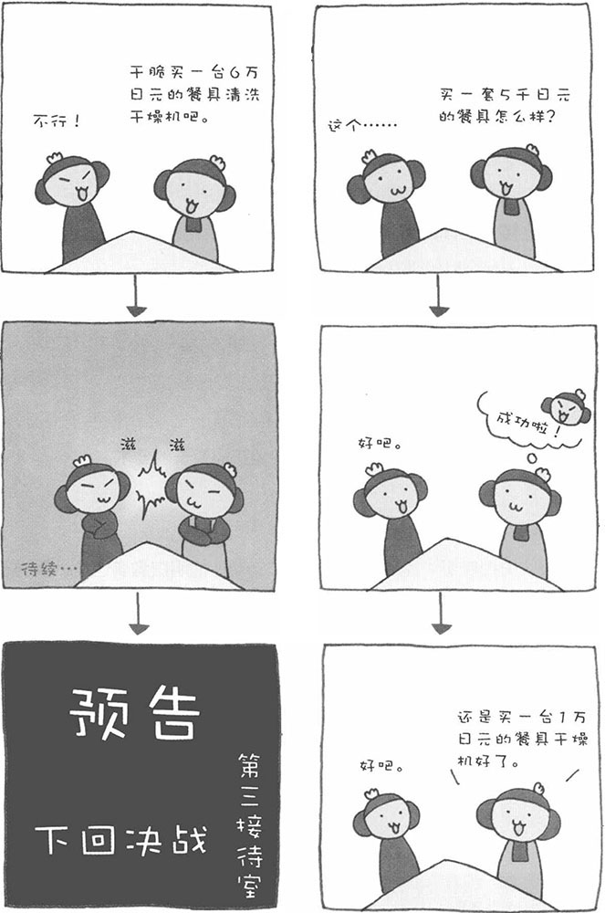
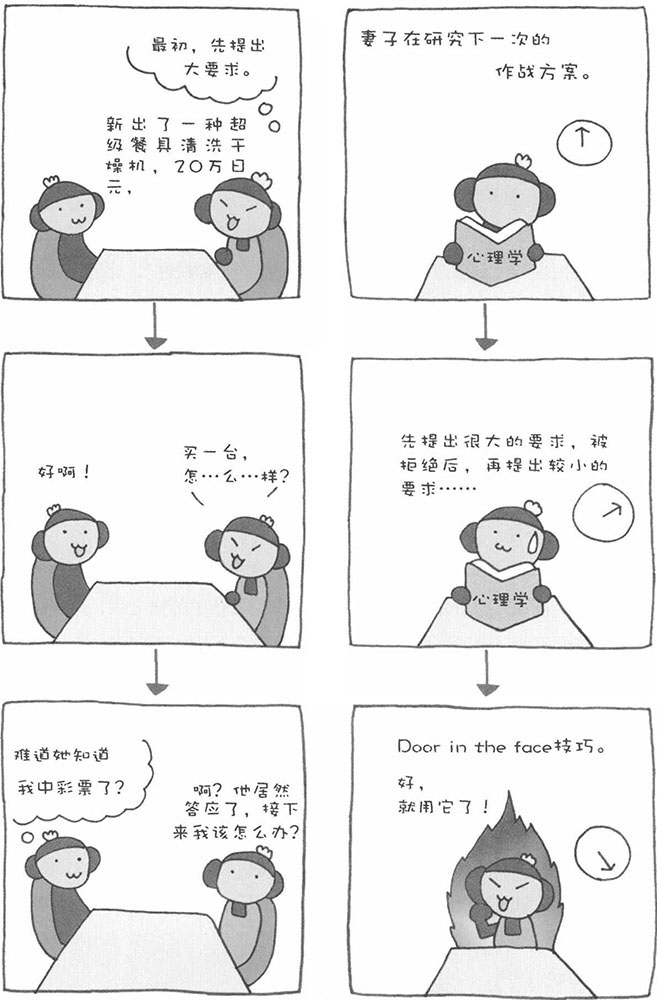

家庭实用心理学
～说服丈夫购买餐具清洗干燥机的方法①～
在电器卖场，像餐具清洗干燥机、滚筒洗衣机、液晶电视机、多功能电饭煲、超静音吸尘器这样高性能、高价位的家用电器比比皆是。对于家庭主妇来说，每一样都有无穷的诱惑力。不过，虽然很想把它们买回家，但只要丈夫不点头，主妇们也不好自作主张。不过，我有说服丈夫的秘诀，家庭主妇们快来学习吧。
■ Foot in the door（登门槛）技巧（阶段性请求法）
如果直接要求丈夫买一台餐具清洗干燥机，大部分情况下都会遭到拒绝，在日本它算得上是几万日元的昂贵家用电器。这时，不妨尝试使用阶段性请求法。首先提出一个比较简单的请求，如果丈夫答应，再逐渐提出难度高的请求。这种方法在英语中叫做"Foot in the door"技巧，这个短语源于上门推销的推销员。推销员首先要敲开您的家门，然后只要有一只脚迈进您家的门槛，他就算成功了。接下来，他会逐渐向您推销各种商品。这也是推销高手常使用的技巧。
一开始，主妇可以以"减少家务时间"为由，向丈夫提出"购买一台1万日元左右的餐具干燥机"的请求。由于金额不算太高，丈夫一般都会答应。一旦丈夫点头，主妇再提出种种理由，比如"想为你做好吃的饭菜，但还是忙不过来"等，再请求"购买一台6万日元的餐具清洗干燥机"。这比一开始就直接提出这个请求的效果要好得多，更容易让丈夫接受。而人一旦做出某种承诺，就很难再拒绝了。使用这一技巧时，第一次请求的价格设定是关键。如果太高了，容易遭到拒绝，而太低了，又使后面的请求变得困难。如果想买的商品价格太高，也可以分三次提出请求。

家庭实用心理学
～说服丈夫购买餐具清洗干燥机的方法②～
■ Door in the face（留面子）技巧（让步性请求法）
如果登门槛技巧行不通，我们还可以采用别的技巧。首先提出一个肯定会被丈夫拒绝的大请求，遭到拒绝后，再提出一个价格较低的请求，这个请求一般都会被接受。举个例子，卖报纸的商家常常采用这一技巧，他们首先会劝说顾客订阅一年的报纸，如果顾客拒绝，他们再提出请顾客订阅一个月的请求。很多顾客都会接受后面的请求。这是因为，人在拒绝对方一次之后，多少会感到一点歉疚，于是会以接受其接下来的请求作为补偿。
我们再回到主妇买餐具清洗干燥机的案例上来，这次来采用让步性请求法。首先向丈夫提一个肯定会遭到拒绝的请求，比如，"买一台价值十几万日元的最新型的餐具清洗干燥机"，遭到拒绝后，再提出真正想买的"6万日元的餐具清洗干燥机"的请求，并且要装出一副忍痛让步的样子。之前拒绝了妻子，现在又看到妻子让步了，丈夫心里的歉疚感会让他答应妻子的要求。
■ 双面呈现和片面呈现
想说服丈夫掏钱买"餐具清洗干燥机"，必须让他明白购买这台机器的理由。在前面介绍的演讲技巧中，已经提到过有两种呈现方法。一种是只强调优点的片面呈现，另一种则是优、缺点都讲的双面呈现。至于选择哪一种方法，就要根据丈夫的聪明程度而定了。如果丈夫很聪明，就选择双面呈现。只强调优点，反而会引起他的怀疑。如果丈夫不够聪明，那就用片面呈现法，只强调商品的优点就可以了。

家庭实用心理学
～看透推销人员伎俩～
在我们生活的世界中，有很多推销人员会专门劝诱善良的家庭主妇购买东西。稍微单纯一点的主妇，很容易就上他们的当了。为了不让善良的主妇们再上当受骗，我在这里为大家掲穿推销人员常用的一些伎俩。
■ 危险的限量销售
在各种各样的广告中，我们经常会听到"限量销售"的宣传。实际上，真正限量销售的比例很少。大多是想让顾客感到这种商品的"稀缺性"，让他们误以为过了这个村可能就没有这个店了，让其丧失理性赶快购买。
例如，"每位顾客限购两个"，这就是一种激发顾客购买欲望的策略。实际上，即使不限定购买数量，真正一次性购买三个以上的顾客也非常少。然而，有了数量上的限制，顾客会认为这是一种畅销商品，会纷纷前来购买。即使自己只需要一个，也会买上两个。
■ 赠品绝不是"免费"的
电视购物已经深入我们的生活。打开电视，您会发现很多频道都在播放购物广告。当电视中的推销人员介绍完商品的种种特性又公布了价格之后，有兴趣的观众就会开始盘算要不要打电话订货。就在这时，推销员会不失时机地补充一句："还有赠品哟……"听到这句话，刚才还犹豫不决的观众，大多数已经决定要买了。
■ 网络商务能轻松赚大钱？
很多商务运营网站为了吸引到更多的客户，都大肆宣传网络商务可以轻松赚大钱。实际上，如果有能赚大钱的方法，谁也不会到处宣扬的。听了广告中的宣传、看了网络商务的运营模式，我们会感觉"这个生意看起来确实能赚钱"。其实，这在心理学上叫做"认知性不协调理论'即人们会按照自己的愿望去解释一个事物。